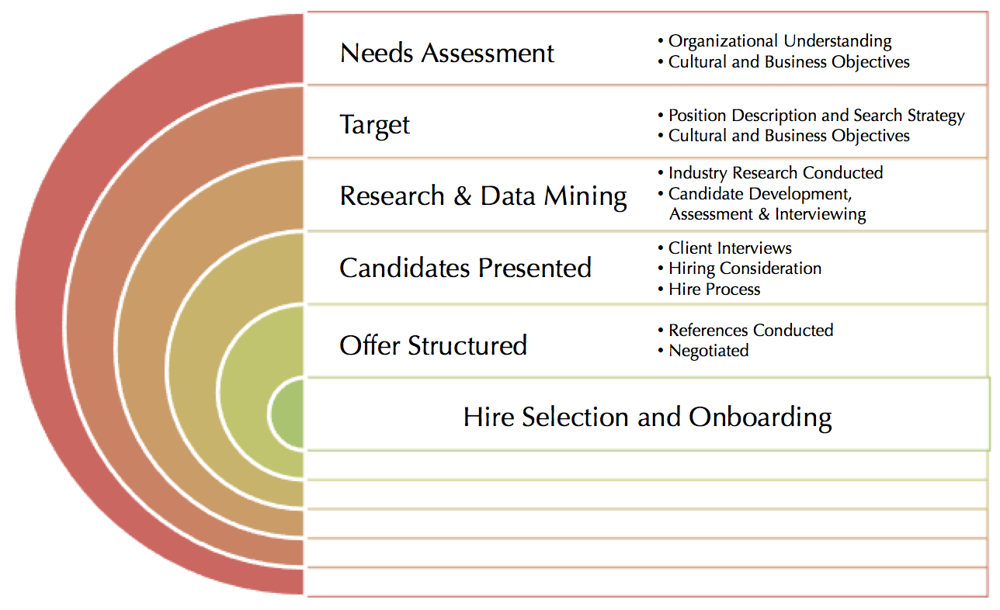

About the Founder, Diana Fotinatos
Diana Fotinatos is the founding Partner of Alexander Consulting Associates, LLC and has
been advising clients on talent acquisition strategies and succession planning for over twenty five years.
Diana has successfully led and closed senior executive level searches across multiple industries.
Her focus has been C-level roles, Division/Business Unit Executives and Partner level roles in top
management consulting firms. |
|
Alexander Consulting is a boutique executive search firm
that provides full service retained executive search and
unbundled executive search services. Our clients range
from leading global organizations across all industries
to retained executive search firms. The mission has always
been to deliver outstanding recruiting services in a timely,
cost effective manner. We bring over 20 years of proven expertise and a personal commitment to deliver results. As a trusted business partner, we are recognized for providing accurate, objective information and cost effective recruiting services that are tailored to meet individual client needs. Our clients depend on our counsel and uncompromised ethics to present them leaders who will meet their specific organizational needs and objectives. |
|
|
|
MORE ATTENTION, BETTER QUALITY
Organizations today are cutting costs across the board and streamlining operations.
Many are closely monitoring recruiting functions with an eye on metrics such as
better quality of candidates, decreased time to fill and lower cost per hire even
at the executive level. Our flexible service offerings and a passion for delivering
quality and value have distinguished us from other recruiting firms. |
INDUSTRIES SERVED
• Consumer Packaged Goods/Retail REPRESENTATIVE ASSIGNMENTS
• Division President for a top consumer foods company UNBUNDLED EXECUTIVE SEARCH SERVICES
For clients with in house recruiting capabilities, the unbundling of the executive search process
enables us to customize the recruiting project to meet the client's specific needs and cost
requirements. We gladly provide as much or as little recruiting support as is necessary.
This process can include the following: A WORD ABOUT FEES
Fees for these services are based on time and expense. Expenses for memberships or posting are billed
at cost. The scope of services includes weekly status reports to insure consistent communication.
A weekly status reports fully detail how much time has been dedicated to an assignment, what specifically
has been accomplished in that time and what next steps are required and/or recommended. This commitment to
communication enables the client to better control the direction of the search. |
|||
Our ProcessWhile we follow a tested, optimized process, no two searches are alike. Part of our mission is to understand your unique requirements, and to deliver the results that you expect from experienced boutique executive search. Functional Expertise
|
 |
CONTACT USWe would love to hear from you. Please contact us through one of the following channels:
|